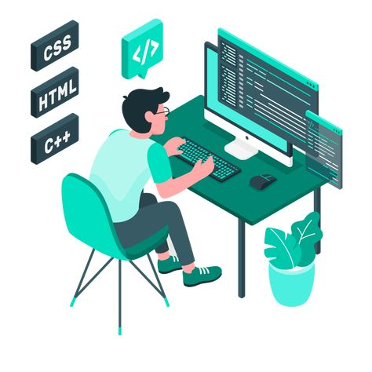

Applications web
Applications métier, tableaux de bord, gestion de données et interfaces administratives.
DÉVELOPPEUR INFORMATIQUE · KISANGANI, RDC
Je conçois des sites web, applications métier et solutions numériques modernes, utiles et adaptées aux réalités de chaque projet.
PROFIL
Je conçois des solutions qui ne se limitent pas à une belle interface : elles doivent être utiles, maintenables et adaptées aux utilisateurs.
Découvrir mon parcours →EXPERTISE
Applications métier, tableaux de bord, gestion de données et interfaces administratives.
Interfaces responsives avec HTML, CSS, JavaScript, Bootstrap, Tailwind et React Native selon le besoin.
PHP, MySQL, SQL, APIs et architectures adaptées aux projets web.
RÉALISATIONS

Conception d'interfaces et d'outils numériques pour simplifier les opérations.
Sites et plateformes pensés pour être clairs, rapides et responsives.
Présenter un profil professionnel et ses réalisations avec une image cohérente.
UN PROJET ?